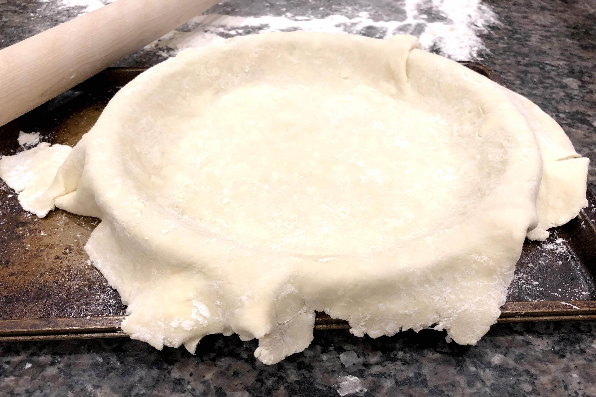
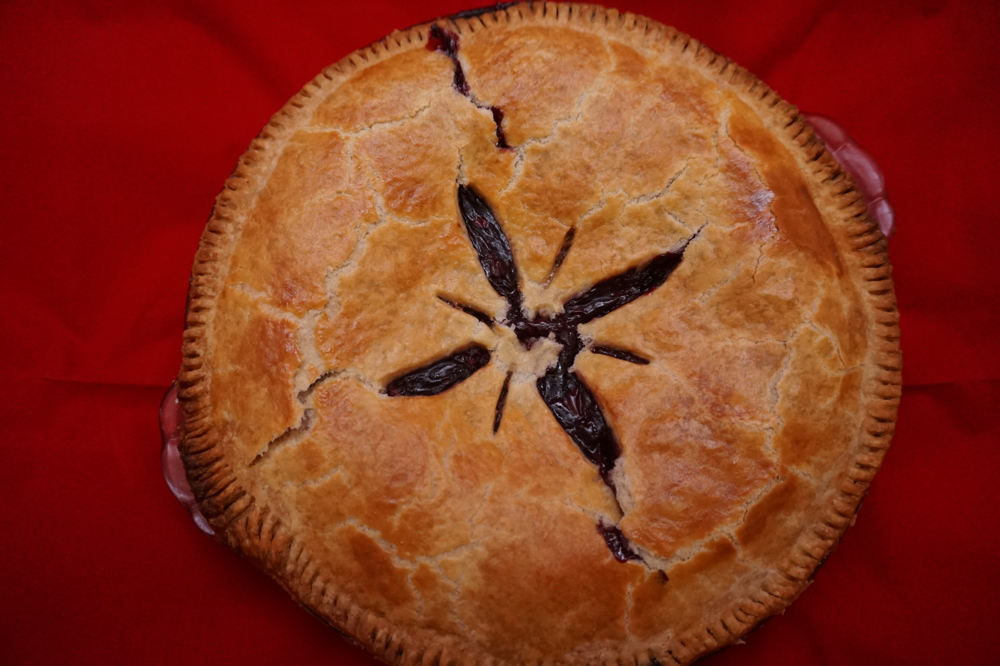
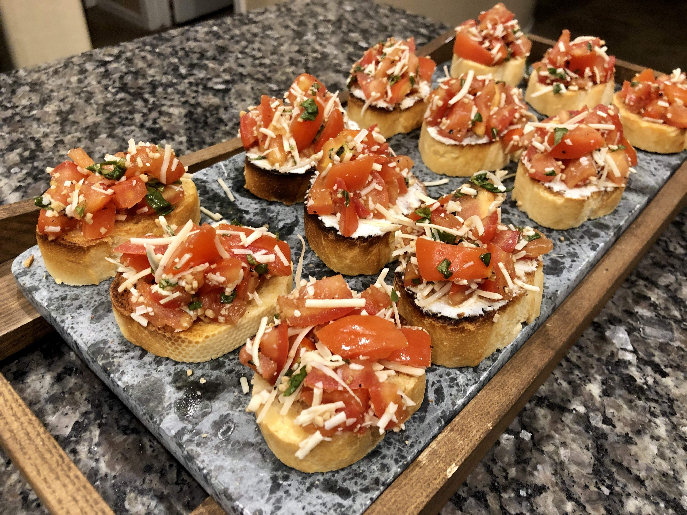

Effin' Tasty
Categories
Appetizers
Basics
Casseroles
Desserts
Mains
Sides
Snacks
About
New & Tasty

Basic Pie Dough

Famous Berry Pie

Bruschetta
Welcome!
Hello, I'm Lauren, and welcome to Effin' Tasty, a cooking site dedicated to sharing my love for effin' tasty foods and the knowledge I've collected along the way creating them. Let's create something effin' tasty!
Types o' Tasty
Appetizers
Basics
Casseroles
Desserts
Mains
Sides
Snacks
Or, Browse by Tags:
bacon
gluten-free
no-cook
easy
chicken
potatoes
one-pot
grill
make-ahead
healthy
vegan
vegetarian
cookies
cakes
frosting
slow-cooker
quick&easy
pasta
beef
healthy/light
pies
fruit